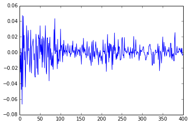
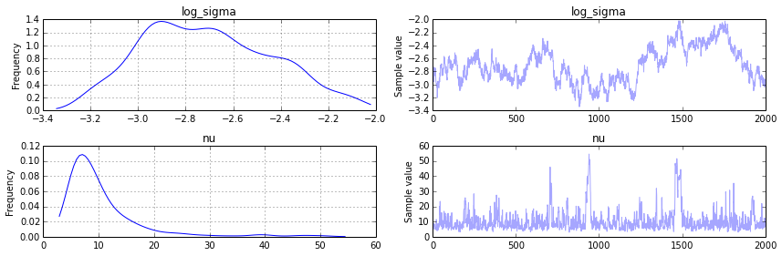
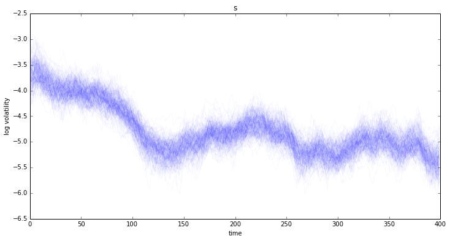
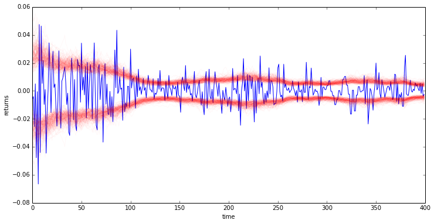

Stochastic Volatility model
import numpy as np
import pymc3 as pm
from pymc3.distributions.timeseries import GaussianRandomWalk
from scipy.sparse import csc_matrix
from scipy import optimize
%pylab inline
Populating the interactive namespace from numpy and matplotlib
Asset prices have time-varying volatility (variance of day over day returns). In some periods, returns are highly variable, while in others very stable. Stochastic volatility models model this with a latent volatility variable, modeled as a stochastic process. The following model is similar to the one described in the No-U-Turn Sampler paper, Hoffman (2011) p21.
Here,
Build Model
First we load some daily returns of the S&P 500.
n = 400
returns = np.genfromtxt("data/SP500.csv")[-n:]
returns[:5]
array([-0.00637 , -0.004045, -0.02547 , 0.005102, -0.047733])
plt.plot(returns)
[<matplotlib.lines.Line2D at 0xff9cdec>]

Specifying the model in pymc3 mirrors its statistical specification.
However, it is easier to sample the scale of the log volatility process innovations, TransformedVar and use logtransform. TransformedVar creates one variable in the transformed space and one in the normal space. The one in the transformed space (here
It takes a variable name, a distribution and a transformation to use.
model = pm.Model()
with model:
sigma, log_sigma = model.TransformedVar('sigma', pm.Exponential.dist(1./.02, testval=.1),
pm.logtransform)
nu = pm.Exponential('nu', 1./10)
s = GaussianRandomWalk('s', sigma**-2, shape=n)
r = pm.T('r', nu, lam=pm.exp(-2*s), observed=returns)
Fit Model
For this model, the full maximum a posteriori (MAP) point is degenerate and has infinite density. However, if we fix log_sigma and nu it is no longer degenerate, so we find the MAP with respect to the volatility process, 's', keeping log_sigma and nu constant at their default values.
We use L-BFGS because it is more efficient for high dimensional functions (s has n elements).
with model:
start = pm.find_MAP(vars=[s], fmin=optimize.fmin_l_bfgs_b)
We do a short initial run to get near the right area, then start again using a new Hessian at the new starting point to get faster sampling due to better scaling. We do a short run since this is an interactive example.
with model:
step = pm.NUTS(scaling=start)
start2 = pm.sample(500, step, progressbar=False)[-1]
# Start next run at the last sampled position.
step = pm.NUTS(scaling=start2)
trace = pm.sample(2000, step, start=start2, progressbar=False)
figsize(12,6)
pm.traceplot(trace, model.vars[:-1]);

figsize(12,6)
title(str(s))
plot(trace[s][::10].T,'b', alpha=.03);
xlabel('time')
ylabel('log volatility')
<matplotlib.text.Text at 0x11f6078c>

Looking at the returns over time and overlaying the estimated standard deviation we can see how the model tracks the volatility over time.
plot(returns)
plot(np.exp(trace[s][::10].T), 'r', alpha=.03);
sd = np.exp(trace[s].T)
plot(-np.exp(trace[s][::10].T), 'r', alpha=.03);
xlabel('time')
ylabel('returns')
<matplotlib.text.Text at 0x1166824c>

References
- Hoffman & Gelman. (2011). The No-U-Turn Sampler: Adaptively Setting Path Lengths in Hamiltonian Monte Carlo.